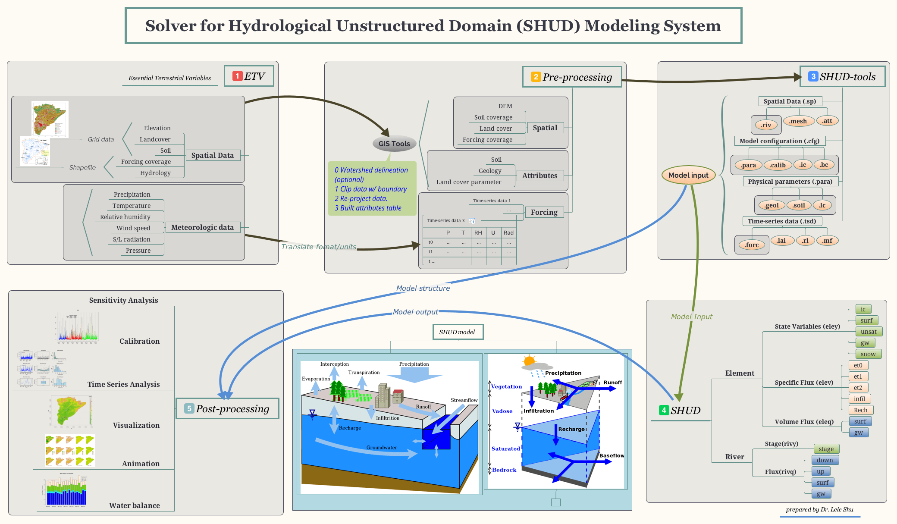
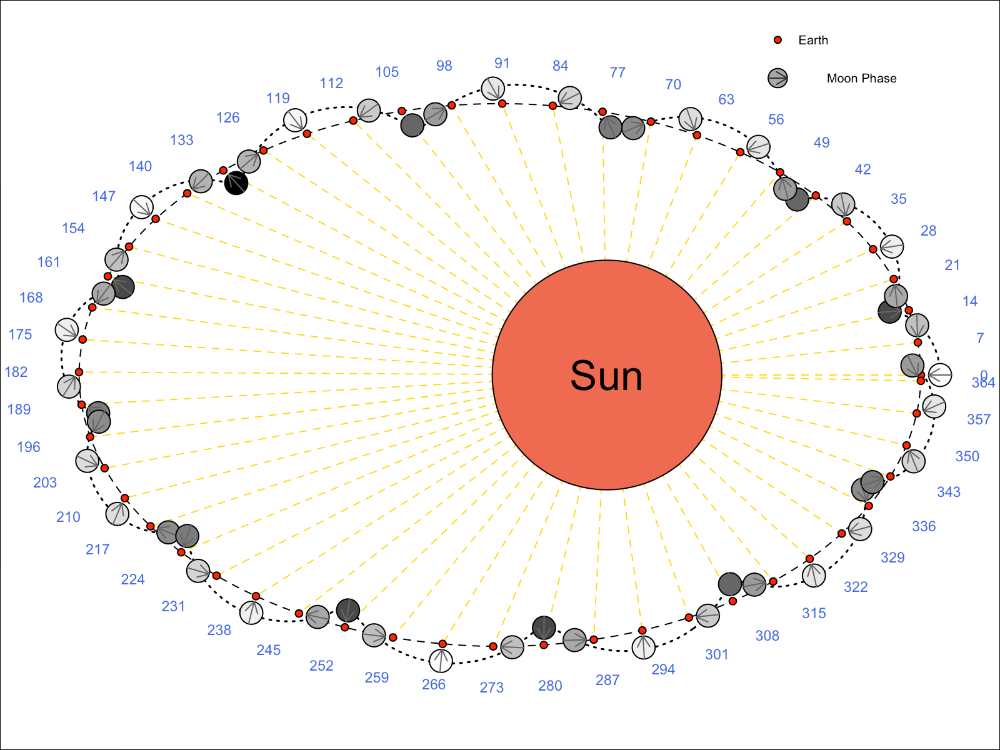

PDF Version Zh
En
223 Hoagland Hall
Davis, CA 95616
llshu@ucdavis.edu
lele.shu@gmail.com
About Me I am a postdoctoral researcher in Department of Land, Air and Water Resources, University of California, Davis. My research interest is in the computational hydrologic model, hydrologic data mining, and integrated Coupled Nature-Human System modeling.
Research Interests
- Develop and use distributed models to understand the hydrological response from watershed to continental scale, under stress of climate and landuse change.
- Advance data mining and statistical downscaling modeling in hydrology. Data fusion and data mining on traditional hydrological observations and soft data.
- Spatial heterogeneity and homogeneity in runoff, evaporation, subsurface fluxes and in their sensitivity to their controls (e.g. snow fall regime, aridity, reaction coefficients).
- High-performance/parallel computing in hydrologic models.
- Coupled Nature-Human watershed modeling.
Education
- 2012 - 2017, Pennsylvania State University (University Park, Pennsylvania, USA). PhD in Water Resource Engineering, Minor in Computational Science
- 2006 - 2009, University of Chinese Academy of Sciences (Lanzhou, China). M.S. in Remote Sensing
- 2001 - 2005, Lanzhou University (Lanzhou, China). B.S in Geography Information System
Work Experiences
2017 - Present Postdoctoral Researcher University of California, Davis (Davis, CA)
- Hydrologic modeling on water availability (groundwater and snowpack) in the Central Valley in California in history and future. link
- SHUD — Solver of Hydrological Unstructured Domain (SHUD) model. Parallel computing, lake modeling, calibration, independent river network, new data structure, bug fixed.
- SHUDtoolbox — GIS data process, sensitivity and hydrologic analysis, spatial data visualization and animation. SHUDtoolbox.
AutoSHUD —Automatically download, process global essential terrestrial data to build hydrologic model, to analysis and to visulize in 2D/3D.
AutoSHUD

RoundAndRound — Calculate and visualize object in orbit, for example Sun-Earth-Moon relation.
RoundAndRound

2012 - 2017 Research Assistant Pennsylvania State University (University Park, PA)
- Development of Penn State Integrated Hydrologic Model (PIHM)
- Development of Cellular Automation Landuse Change Model (CALUC) — Top-down Cellular landuse change model
- Hydrologic analysis tool (R and Matlab) — Read, write, parameterize, analysis(time series, spatial and uncertainty analysis) and visualize (plot, 3D/3D and animation).
- Hydrologic data process tools ®—Automatically download data from national data server and convert the data in GRIB, HDF, NetCDF format to other Time-Series format.
- Development of HydroTerre Conversion Tool (Java)—Convert the spatial and meteorological data from HydroTerre Data Server
Publications
- L. Shu, P. Ullrich, C. Duffy. Solver for Hydrologic Unstructured Domain (SHUD): Numerical modeling of watershed hydrology with the finite element method. Geoscientific Model Development (Submitted 2019)
- B. Zhang, Y. Yuan, L. Shu, E. Grosholz, Y. Guo, L. Zhai, A. Hastings, J. Cuda, J. Qiu. Scaling up from plant stress response in greenhouse to landscape scale suitability for the distribution of an invasive species (Submitted 2019)
- X. Yu, Z. Xu, D. Moraetis, N. Nikolaidis, L. Shu, et al. Coupled surface-subsurface modeling of fresh submarine groundwater discharge of an island in the Mediterranean Sea. Advances in Water Resources (Submitted 2019)
- L. Shu, P. Ullrich, C. Duffy. Quick automated watershed modeling with the Penn State Integrated Hydrologic Model (PIHM): Essential data, simulation, applications and visualization (Draft 2019)
- L. Shu, C. Duffy. Competitive Lotka-Volterra System Cellular Automata Land Use Change Model. (Draft 2019)
- L. Shu, C. Duffy. Comparison of the simulated spatial distributed water balances by landuse classes in Conestoga Watershed. (Draft 2019)
- L. Shu, C. Duffy. Developing plausible scenarios for the competing impacts of landuse change and climatic change in the Conestoga Watershed: past, present and future. (Draft 2019)
- L. Shu, C. Duffy. Reconstructing the role of landuse change on water yield at the Maya urban center Tikal, Guatemala [700-800 CE]. (Draft 2019)
- D. Garijo, D. Khider, V. Ratnakar, Y. Gil, … L. Shu, … , An Intelligent Interface for Integrating Climate, Hydrology, Agriculture, and Socioeconomic Models , in ACM 24th International Conference on Intelligent User Interfaces (IUI’19), 2019, p. 111–112.
- X. Yu, A. Lamacova, L. Shu, C. Duffy, P. Krám, J. Hruška, T. White, K. Lin. (2019). Data rescue in manuscripts: a hydrologic modelling study example. Hydrological Sciences Journal
- N. Ward, L. Shu, et al. Integrating fast and slow processes is essential for simulating human-freshwater interactions. Ambio (2018)
- K.M. Cobourn, … L. Shu, … From concept to practice to policy: modeling coupled natural and human systems in lake catchments. Ecosphere, 8. 2018
- L. Shu, Z. Nan. A novel system for near real-time field observation based on Twitter-like services and GSM/SMS network. Journal of Glaciology and Geocryology[J], 32(5). 2010.
- Z. Nan, L. Shu, Y. Zhao, et al. Integrated modeling environment and a preliminary application on the Heihe river basin[J]. SCIENCE CHINA E: Technological Sciences. 2011, 54(8): 2145-2156
- K. Feng, Z. Nan,Y. Zhao, L. Shu. Prototype Development for an Integrated Modeling Environment Based on Plugins. Remote Sensing Technology and Application[J]. 23(5). 2008.
Conferences
- 2019.12, Quick and reproducible automated watershed modeling with the SHUD: Essential data, simulation, applications and visualization, AGU, San Francisco, California, USA
- 2018.12 Model simulated spatial distribution and the variation of ground water level in
- Sacramento Watershed, California from 1985 to 2017, AGU, Washington, DC, USA
- 2018.04 Groundwater and Snow Storage Simulation with PIHM, California Water& Environmental Modeling Forum, Sacramento, California, USA
- 2017.12 Coupling Cellular Automata Land Use Change with Distributed Hydrologic models, AGU, New Orleans, Louisiana, USA
- 2015.12 Catchment hydrological change from soil degradation — A model study for assessing urbanization on the terrestrial water cycle AGU, San Francisco, California, USA
- 2015.03 Reconstructing the role of landuse change on water yield at the Maya urban center Tikal, Guatemala [700-800 AD], Penn State Graduate Exhibition, University Park, Pennsylvania, USA
- 2014.12 Reconstructing the role of landuse change on water yield at the Maya urban center Tikal, Guatemala [700-800 AD], AGU, San Francisco, California, USA
- 2014.10 PIHM and PIHMgis workshop. Global Lake Ecological Observatory Network (GLEON) 16, Orford, Quebec, Canada
- 2014.09 Green Infrastructure and Stormwater Management SAC Meeting
2013.12 Center for Green Infrastructure and Stormwater Management: Urbanization-driven hydrological process change in Lancaster of Pennsylvania,AGU, San Francisco, California, USA
Research Projects
- 2019 Knowledge-Guided Machine Learning: A Framework to Accelerate Scientific Discovery
- 2018 Model Integration through Knowledge-Rich Data and Process Composition
- 2017 An Integrated Evaluation of the Simulated Hydroclimate System of the Continental US
- 2017 Advanced Statistical-Dynamical Downscaling Methods and Products for California Electrical System Climate Planning
- 2015 CNH-L: Linking Landuse Decision Making, Water Quality, and Lake Associations to Understand Human-Natural Feedbacks in Lake Catchments
- 2013 Land, Water, and Territory: A 3,000-Year Study of Niche Construction and Cultural Evolution in the Tikal National Park, Guatemala
- 2012 NSF Hydrologic and Water Quality Modeling for Green Infrastructure
- 2008 Simultaneous Remote Sensing and Ground-based Experiment in the Heihe River Basin: Scientific Objectives and Experiment Design
- 2008 Heihe Watershed Allied Telemetry Experimental Research (HiWATER)
- 2006 Land and Water Resources in Heihe River Basin Decision Support System for Sustainable Development Based on Scientific Models and Three-dimensional Gaming Experience
- 2006 GIS-based Hydrology and Water Resources Integrated Modeling Environment Research in Heihe River Basin
Skills
Programming: ◦ C/C++ ◦ R ◦ Java ◦ Python ◦ Shell ◦ Matlab/Octave/SciLab ◦ Fortran ◦ Qt
Professional software: ◦ SHUD/PIHM ◦ ArcGIS/GRASS GIS/QGIS ◦ SWAT ◦ HYDRUS ◦ HEC-RAS ◦ PAWS/PRISM
Courses Prepared To Teach
- Numerical methods in geosciences
- Geographic Information System
- Data Mining in R
- Data structure and algorithm
- Advance C/C++ programming